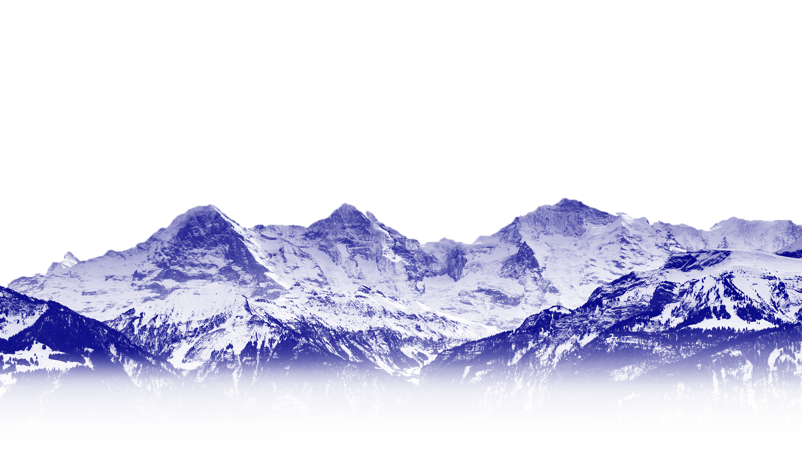
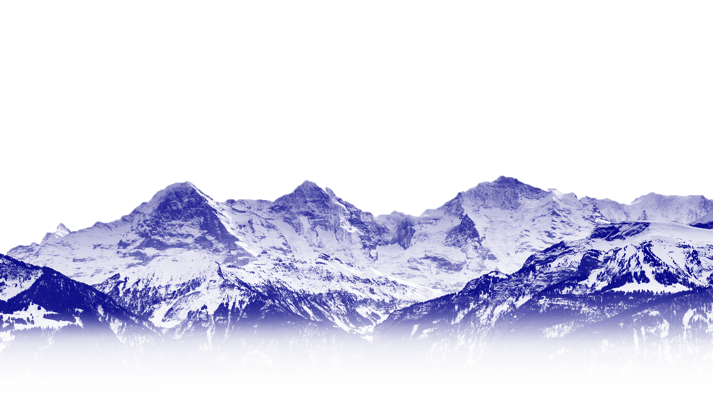
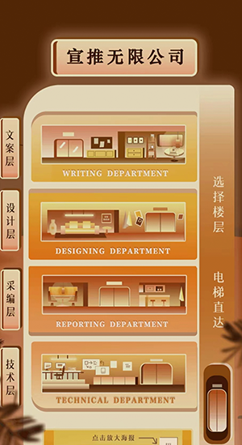

official account
头图设计
公众号是最开始接触到的设计形式，会根据主题推送不同，会有不同的想要探索的风格。
分图设计
分图一般是头图的延伸，但精悍的格子里会改变我很多的设计思路。
招新推送
中国传媒大学学生会代表色是橙色，全篇便以橙色为主，素材一般都用钢笔工具制作，内部颜色采用了较为擅长的渐变设计。
- 
风采推送
这是中传才艺比赛“风采之星”的十强段傲然的个人专访推送，选手钟意的舞种是poping，就联想到“这就是街舞”的设计风格。